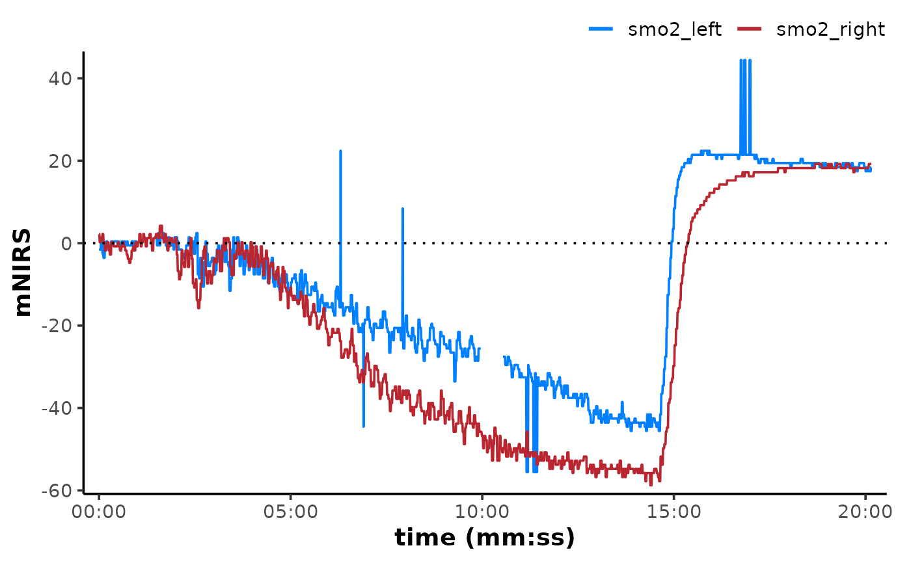

Move the range of data channels in a data frame up or down, while preserving the absolute amplitude/dynamic range of each channel, and the relative scaling across channels. e.g. shift the minimum data value to zero for all positive values, or shift the mean of the first time span in a recording to zero.
Arguments
- data
A data frame of class "mnirs" containing time series data and metadata, a list of data frames, or a grouped data frame (see Details).
- nirs_channels
A character vector giving the names of mNIRS columns to operate on. Must match column names in
dataexactly.If
NULL(default), thenirs_channelsmetadata attribute ofdatais used.
- time_channel
A character string naming the time or sample column. Must match a column name in
dataexactly.If
NULL(default), thetime_channelmetadata attribute ofdatais used.
- group_channels
Either a character string or a
list()of channel-name vectors specifying how to groupnirs_channels(see Details)."ensemble"The default. Operate on all channels together, preserving the relative scaling between channels.
"distinct"Operate on each channel independently, losing the relative scaling between channels.
list(c("A", "B"), c("C", "D"))Operate on channels
A&Bin one group, andC&Din another group. Groups can be named (e.g.list(smo2 = c("A", "B"))). Each group must be non-empty and resulting group names must be unique.
- to
A numeric value in units of
nirs_channelsto which the data channels will be shifted, e.g. shift the minimum value to zero.- by
A numeric value in units of
nirs_channelsby which the data channels will be shifted, e.g. shift all values up by 10 units.- width
An integer defining the local window in number of samples centred on
idx, between[idx - floor(width/2), idx + floor(width/2)].- span
A numeric value defining the local window time span around
idxin units oftime_channelort, between[t - span/2, t + span/2].- position
Indicates where the reference values will be shifted from.
"min"(The default) will shift the minimum value(s)
toorbythe specified value."max"Will shift the maximum value(s)
toorbythe specified values."first"Will shift first value(s)
toorbythe specified values.
- verbose
Logical.
TRUE(default) will display, andFALSEwill silence warnings and information messages helpful for troubleshooting. Global default can be set viaoptions(mnirs.verbose = FALSE).
Value
A tibble of class "mnirs" with metadata
available with attributes(). For list or grouped data frame input,
returns a named list of "mnirs" tibbles, one per interval.
Details
group_channels controls how data channels are grouped to preserve
absolute or relative scaling (see rescale_mnirs()).
group_channels = "ensemble"(the default) shifts allnirs_channelsto a common value, preserving relative scaling between channels.group_channels = "distinct"shifts each channel independently, losing relative scaling between channels.A
list()of channel-name vectors (e.g.list(c("A", "B"), c("C", "D"))) shifts channelsA&Btogether andC&Dtogether, preserving relative scaling within, but not between groups.nirs_channelsomitted from the list are rescaled independently.Channel groups can be named (e.g.
list(smo2 = c("A", "B"))) and names used as keys for per-group arguments.
Only one of either to or by and one of either width or span should
be defined for each group_channels. If both of either pairing are
defined, to will be preferred over by, and width will be preferred
over span.
Channels (columns) in
datanot innirs_channelsare passed through without processing to the output data frame.
nirs_channels and time_channel can be retrieved automatically from
data of class "mnirs" which has been processed with {mnirs},
if not defined explicitly.
When position is "min" or "max", only full windows of width or
span are considered, to avoid bias from noise at edge conditions with
partial samples.
Per-channel arguments
Arguments apply globally to all nirs_channels by default. Relevant
arguments can instead be supplied uniquely per-channel as a named list(),
with names matching either nirs_channels or list names in
group_channels, e.g.
shift_mnirs(
data,
nirs_channels = c(A, B, C),
group_channels = list(smo2 = c(A, B), hhb = C),
to = list(100, C = 0),
width = list(smo2 = 3),
span = list(hhb = 5),
position = "first"
)A non-list value applies to every channel (the default behaviour).
A
list()named bynirs_channelsorgroup_channelsapplies per-channel / per-group values.A single unnamed value in the list will be applied to unlisted channels (e.g.
span = list(3, hhb = 5)giveshhb5 and every other channel 3). If no unnamed fallback value in the list, channels not named in the list will be returned un-processed (e.g.span = list(hhb = 5)will only processhhb).list()names not matchingnirs_channelsorgroup_channelsare warned about and ignored.
Data input formats
mnirs processing functions accept data in multiple formats:
A single "mnirs" data frame is processed and returned directly.
A list of "mnirs" data frames: each interval is processed separately and returned as a named list.
A grouped "mnirs" data frame, e.g. with
dplyr::group_by(): the data frame is split by grouping levels and each group is processed as a separate interval, returned as a named list.
Examples
## read example data
data <- read_mnirs(
file_path = example_mnirs("moxy_ramp"),
nirs_channels = c(smo2_left = "SmO2 Live",
smo2_right = "SmO2 Live(2)"),
time_channel = c(time = "hh:mm:ss"),
verbose = FALSE
) |>
shift_mnirs( ## un-grouped nirs channels to shift separately
nirs_channels = c(smo2_left, smo2_right),
group_channels = "distinct",
to = 0, ## NIRS values will be shifted to zero
span = 120, ## shift the *first* 120 sec of data to zero
position = "first"
)
data
#> # A tibble: 2,202 × 3
#> time smo2_left smo2_right
#> <dbl> <dbl> <dbl>
#> 1 0 -1.56 2.22
#> 2 0.560 -1.56 2.22
#> 3 1.11 -1.56 0.225
#> 4 1.66 -1.56 0.225
#> 5 2.21 -1.56 0.225
#> 6 2.76 -1.56 0.225
#> 7 3.31 1.44 1.22
#> 8 3.86 1.44 1.22
#> 9 4.41 1.44 1.22
#> 10 4.96 1.44 1.22
#> # ℹ 2,192 more rows
# \donttest{
if (requireNamespace("ggplot2", quietly = TRUE)) {
plot(data, time_labels = TRUE) +
ggplot2::geom_hline(yintercept = 0, linetype = "dotted")
}

# }